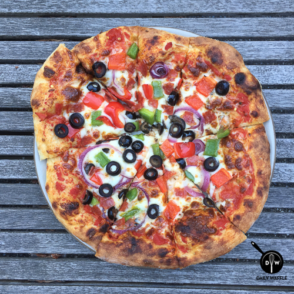

Pizza

For years, Costco's Supreme Pizza held a special place in the hearts of pizza lovers and Costco members alike. Unfortunately, this legendary pizza, once a staple in the food court lineup, has been taken down, leaving behind a trail of nostalgia and fond memories for those who had the pleasure of savoring its deliciousness.
What set the Supreme Pizza apart was its abundant toppings. It was generously adorned with a medley of fresh and savory ingredients. Plump, juicy pepperoni slices, savory Italian sausage, green bell peppers, red onions, black olives, and mushrooms adorned the pizza in a colorful and flavorful mosaic. A generous layer of melted, golden cheese held this delightful ensemble together.
Ingredients
- 1 ball of dough from Kenji's NY Style pizza dough
- 1/3 cup of crushed tomatoes
- 1/2 teaspoon of dried oregano
- a drizzle of olive oil
- 1/4 cup of sliced black olives, drained
- 1/3 cup of red bell pepper, large diced
- 1/3 cup of green bell pepper, large diced
- 2-3 slices red onion, separated
- 6-8 slices pepperoni, diced
- ~ 1 cup of grated dry mozzarella
- cornmeal for dusting the pizza peel
Steps
- In the upper third of your oven, preheat Baking Steel for ~ 1 hour at 500F. Turn up to broil or 550F when ready to bake.
- Dust your pizza peel with flour and cornmeal. Pat the dough into roughly a 10-inch round, careful not to flatten the edges. Make sure it slides easily on the peel.
- Spread the crushed tomatoes on the dough using the back of a spoon, leaving ~1/2 in. border. Sprinkle on the oregano and drizzle with olive oil. Add the mozzarella first, then olives, bell peppers, onion and pepperoni.
- Bake for 7-9 minutes (5-7 if broiling) or until the cheese is bubbly and the crust is well browned. Let rest on a cooling rack for 1-2 minutes. Slice and serve.